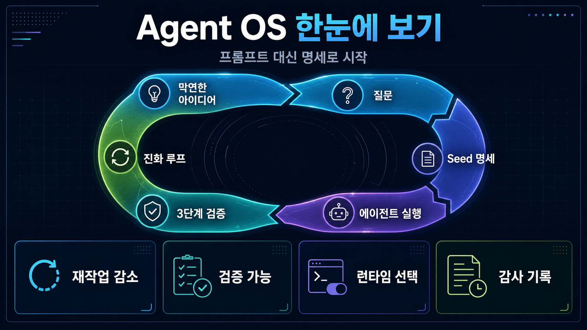

GitHub Repository Infographic Report · Q00/ouroborosOuroboros
Ouroboros
한눈에 보기
막연한 AI 코딩 요청을 바로 실행하지 않고, 질문·명세·실행·검증·진화 루프로 바꿔 주는 명세 우선 Agent OS입니다.
ai-agentagent-osllm-orchestrationllm-runtimepython
★ 5,055Stars
507Forks
54Open Issues
v0.50.5Latest release